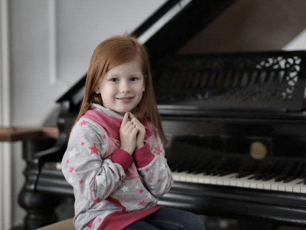

I was 7 years old when I have first met piano. It was in a film scene, and I was fully enchanted by a young lady who played on the piano in a charming way. I immediately imagined that I was going to be just like her. I announced this wish to my parents and my mom asked me why I wanted to learn playing on the piano so desperately. My answer was rather funny: “Because real ladies can play on the piano”. “And you are a real lady, of course, honey?” she was giggling. The next day, in the elementary school, a classmate of mine mentioned that she had been taking piano lessons in a music school and I decided to speak to the headmaster personally without the presence of my parents. He said that the semester had begun and there was no admission to new joiners. I didn’t give up and begged by arguing it was the matter of life and death. Due to my stubborn behaviour, he finally offered a place with the stipulation of learning a 6-month curriculum as the other students had been largely ahead of me. I was the happiest person in the word.
So, I ran back home and asked my parents to buy a piano for me explaining the headmaster’s offer with the challenge of learning the 6-months curriculum. To be honest, I don’t know how they could take me seriously moreover how they were able to handle my request as at that time we were in dire need of money and perhaps my parents wanted to buy everything but a piano. But they made it happen and I immediately began reducing my handicap of 6 months. I had to pass the exam with a good mark otherwise they would have refused my application. In the light of the above, I had to take the exam preparation very seriously. I was lucky because I had a brilliant teacher and my mom also helped me a lot at home, they knew how to help me achieve my goal. They encouraged and praised me. I wanted to impress everybody. I don't remember about too many details, but I did it finally. So, I could continue to study in a music school. After the leaving exam I applied for a college where besides playing on different instruments and studying music theory I was trained in pedagogy.
So here we go I was a young woman and I played quite good on the piano, just like in films. After the collage I went to teach in a primary school for three years. Then I left my job in 2000 because I moved to another country. I stopped playing on the piano and singing. In 2018, at Christmas I received a digital piano from my husband, and I found playing on an instrument is something like biking. This is my verdict on an interesting experiment even though it was not intentional. This is something that can be just yours, something that you are doing for your own joy or also you can share it with your friend and relatives. Believe me, they will find your performance fantastic even if they notice some imperfections. So, I would like to encourage everybody who used to play on any instrument to get back to this great hobby as any time is good to restart. For those who have always planned to learn, trust me, there is nothing to lose if you try it. So, are you ready? Do not hesitate! Try it, even if you find it hard at the beginning. The point is to make our life more interesting, and we can go beyond our boundaries in a safe way. Thanks to the music my life became more relaxed, joyful, and I’ve made my family happy with my play. Let’s have a try